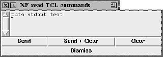

Calling this procedure pops up a dialog box, where the user can enter Tcl/Tk code that is evaluated if he presses the button (Send) or the button (Send + Clear). The button (Clear) clears the text area. To remove the dialog box, the button (Dismiss) is pressed.

Figure: The procedure XFProcFileEnterTCL